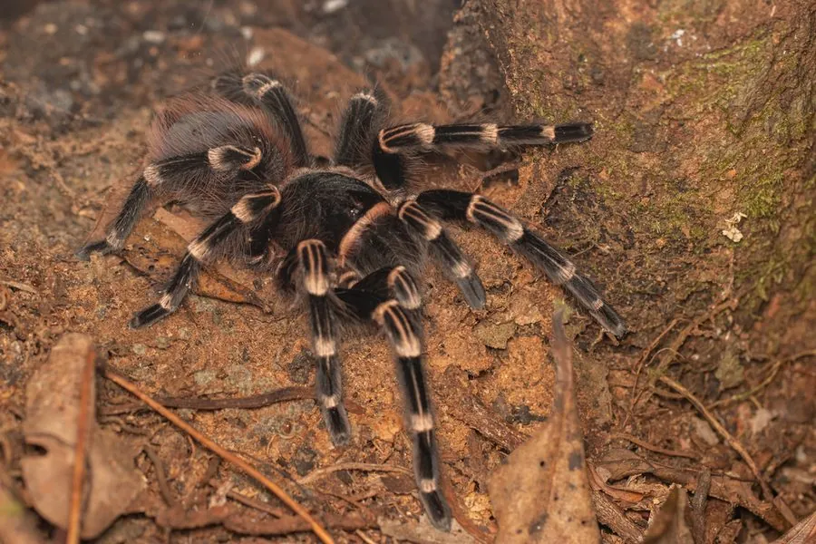

蛛形动物 · 动物界
巴西白膝捕鸟蛛 Acanthoscurria geniculata

原产巴西雨林的大型捕鸟蛛，腿部关节有醒目的白色环纹，性格较活跃，受惊时会弹射蛰毛，毒性较弱但需避免接触。
- 分类
- 门节肢动物门纲蛛形纲目蜘蛛目科捕鸟蛛科属白膝捕鸟蛛属
- 栖息环境
- 巴西亚马孙流域热带雨林的林下洞穴、石缝与落叶层
- 地理分布
- 巴西及南美洲北部的热带雨林地区
- 保护级别
- IUCN 暂无评估；非中国原产，在中国无保护级别
物种志
巴西白膝捕鸟蛛足展 15–20 厘米，身体粗壮，头胸甲呈深褐色，腹部覆盖红褐色长毛，八足粗壮，膝关节处有明显的白色环纹，“白膝”之名由此而来。它体色对比强烈，是捕鸟蛛中辨识度很高的种类。
它原产于巴西亚马孙流域的热带雨林，栖息于林下洞穴和石缝中，夜间捕食昆虫、小型蜥蜴和蛙类。雌蛛每次产卵约 500–1000 枚，卵囊由雌蛛守护，孵化约 2–3 个月。它性格较活跃，受惊时行动迅速，并会用后足摩擦腹部弹射蛰毛，蛰毛接触皮肤会引起瘙痒和红肿；其毒性较弱，但大个体的螯肢仍可造成疼痛伤口。它因外形漂亮而成为异宠市场的热门物种，在中国属于外来物种，饲养者不可随意放生。
形态与习性
- 食性昆虫、小型蜥蜴和蛙类
- 足展15–20 cm
- 寿命雌蛛 15–20 年，雄蛛约 3–5 年
- 繁殖卵生，每窝约 500–1000 枚，孵化约 2–3 个月
- 活动节律夜行性
- 防御弹射蛰毛，接触皮肤会引起瘙痒红肿
- 毒性毒性较弱，但螯肢可造成疼痛伤口
趣味知识
- 巴西白膝捕鸟蛛腿部关节的白色环纹，是它最容易辨认的特征。
- 受惊时它会用后足弹射腹部的蛰毛，这些毛接触皮肤会引起过敏瘙痒。
- 它行动迅速、性格较活跃，饲养时需要注意防止逃逸。